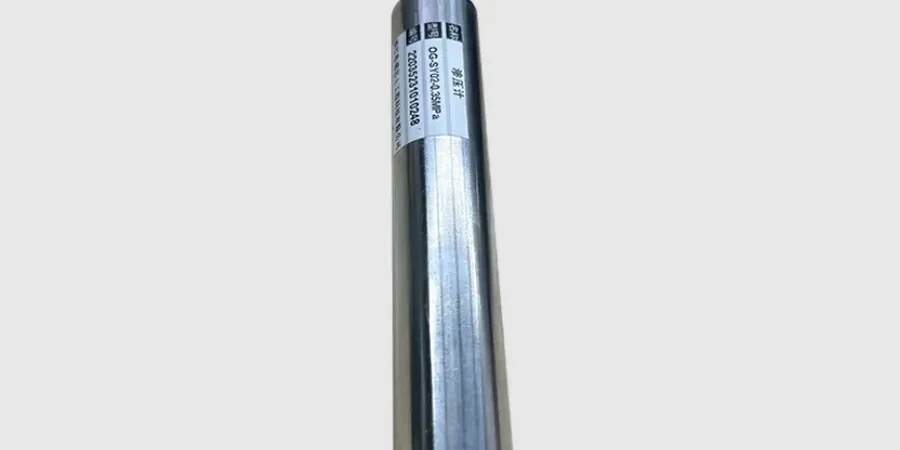

Mackay’s dynamic growth demands geotechnical insight that matches its unique coastal and hinterland setting. We deliver comprehensive subsurface investigations, foundation design, and construction monitoring tailored to the region’s varied geology. From site characterisation through to code-compliant reporting, our team integrates local knowledge with advanced methods—such as undisturbed sampling for sensitive clays and settlement analysis for soft coastal soils. Whether assessing residential lots or large industrial pads, we ensure your project stands on a reliable, informed foundation.

Technical reference image — Mackay
Methodology and scope
Mackay sits within the Central Queensland Coast bioregion, underlain by Quaternary alluvial deposits, Tertiary basalts, and Permian-Triassic sedimentary rocks. The coastal plain features deep, soft Holocene clays and silts—often with high plasticity—overlying Pleistocene sands and gravels. Inland, residual soils derived from weathered basalt and metasediments dominate, presenting variable strength and shrink-swell potential. Groundwater is typically shallow near the coast, fluctuating with tidal influence and seasonal rainfall. Seismic hazard is low, but localised liquefaction potential exists in saturated, loose sands. The region also experiences acid sulfate soils in low-lying areas, requiring careful management during excavation. Understanding these conditions is critical for foundation design, pavement performance, and slope stability.
Local considerations
With consolidated regional experience across Mackay and the Whitsunday coast, we bring calibrated laboratory equipment and field testing capabilities directly to your site. Our team routinely coordinates with local contractors, council engineers, and regulatory bodies to streamline approvals. We produce code-compliant reports that address Mackay’s soft soils, acid sulfate risks, and variable bedrock depths. This local focus—combined with rigorous quality control—gives clients confidence in our recommendations, whether for a single dwelling or a major subdivision.
Our work in Mackay follows the Australian Standard AS 1726 for geotechnical site investigations, AS 2870 for residential slabs and footings, and AS 4678 for earth-retaining structures. Laboratory testing adheres to AS 1289 methods (e.g., AS 1289.3.6.1 for Atterberg limits) and AS 1289.6.3.1 for standard penetration tests. For seismic considerations, we reference AS 1170.4. All reporting is code-compliant and tailored to local council requirements, ensuring clear, defensible documentation for every project.
Frequently asked questions
What are the most common geotechnical challenges for residential projects in Mackay?
Residential sites in Mackay frequently encounter soft, compressible clays and variable fill materials, which can lead to differential settlement. Shallow groundwater and acid sulfate soils also require careful management. We recommend site-specific testing—including undisturbed sampling and Atterberg limits—to classify soils and design appropriate footings. Our reports directly address these local conditions, helping homeowners and builders avoid costly surprises.
How does the local geology affect pavement design for roads and car parks in Mackay?
Mackay’s coastal geology often features high-plasticity clays and loose sands, which can cause subgrade instability and poor drainage. For pavement design, we assess California Bearing Ratio (CBR) values and perform moisture condition tests to account for seasonal wetting. Our recommendations incorporate site-specific subgrade improvement, such as lime stabilisation or geotextile reinforcement, to extend pavement life and reduce maintenance.
What Australian standards must be followed for geotechnical work in Mackay?
Geotechnical investigations in Mackay must comply with AS 1726 (site investigation), AS 1289 (soil testing methods), and AS 2870 (residential slabs). For larger structures, AS 1170.4 covers seismic loads, and AS 4678 addresses retaining walls. All reports should reference these standards to satisfy local council and building certification requirements. We ensure every project meets these codes, providing clear documentation for approval.
How does your firm handle acid sulfate soils commonly found in Mackay?
Acid sulfate soils (ASS) are prevalent in Mackay’s low-lying coastal areas. Our approach includes field screening (pH and peroxide tests), laboratory analysis (SPOCAS method), and a management plan that outlines avoidance, neutralisation, or controlled handling. We coordinate with the local council and follow the Queensland Acid Sulfate Soil Technical Manual to ensure compliance. This proactive management prevents environmental harm and costly remediation during construction.